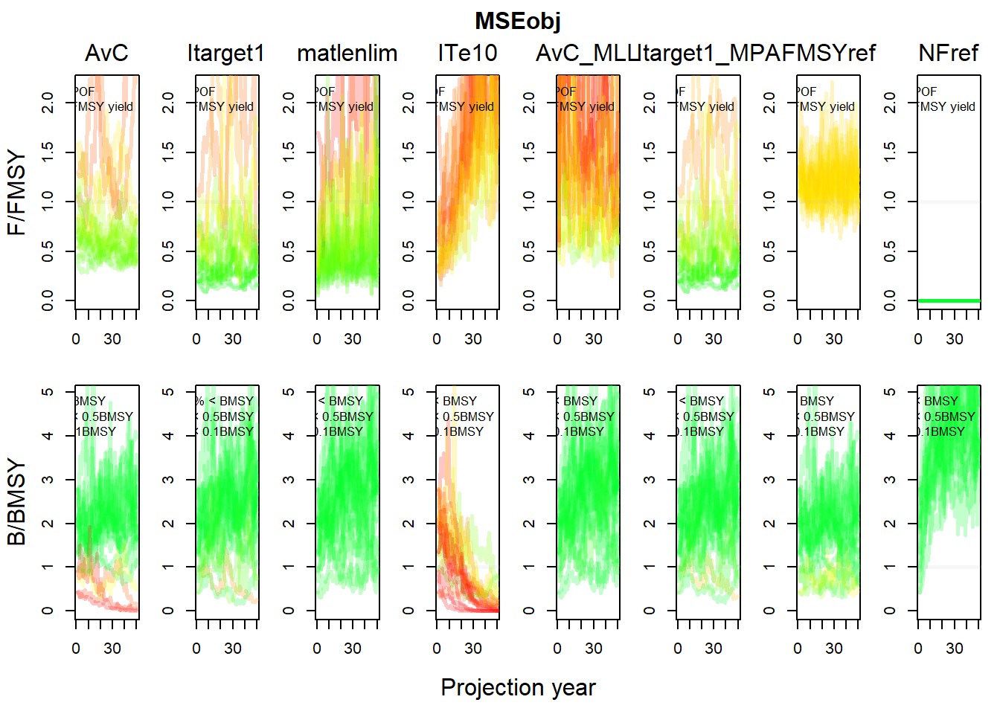
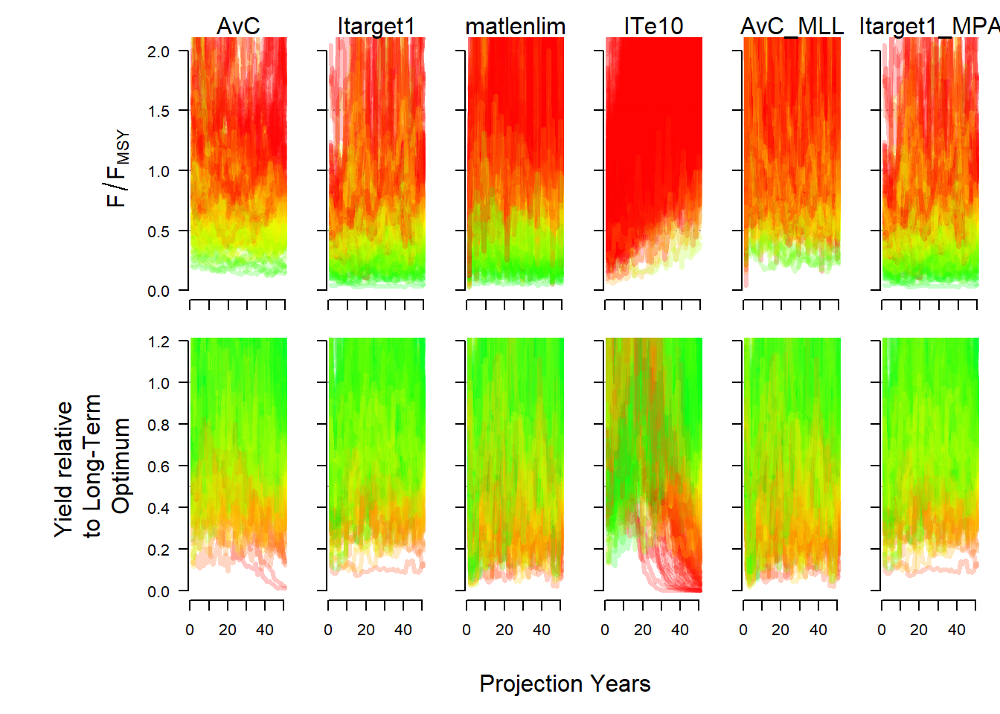
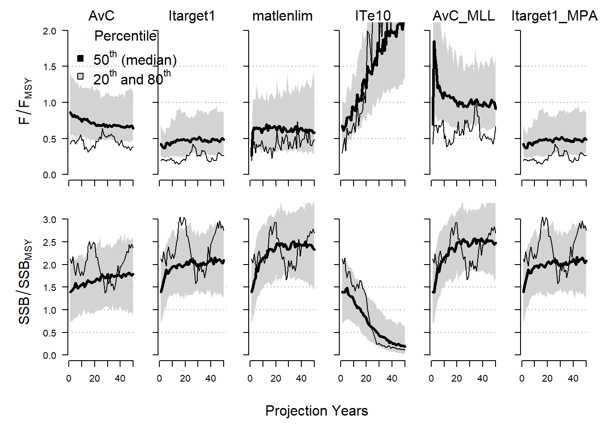
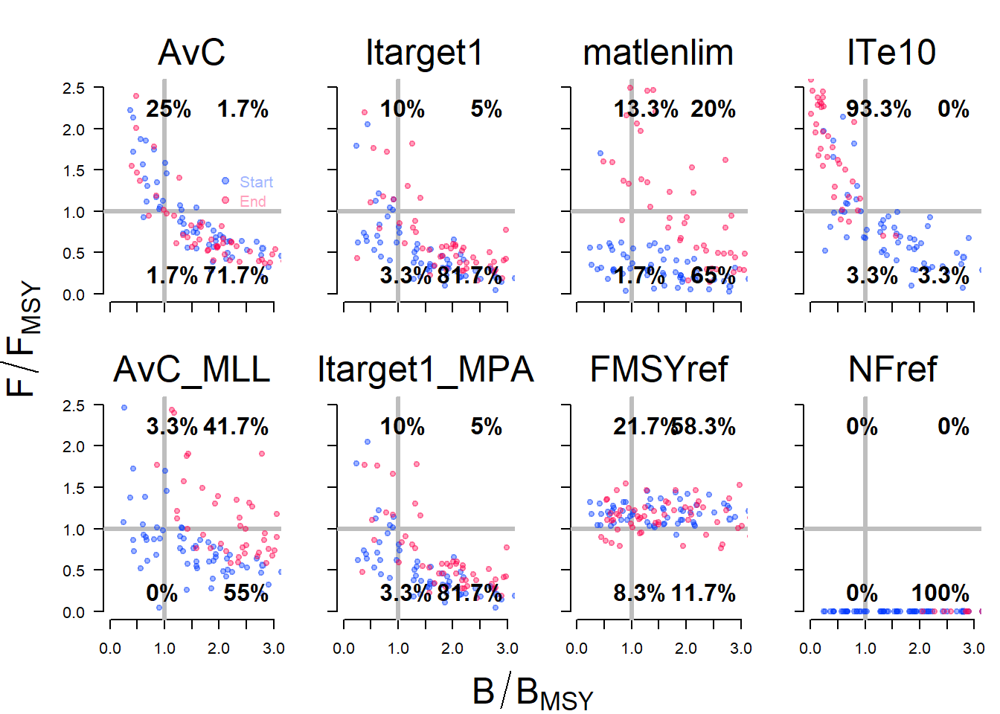

Chapter 8 Plotting the MSE Results
The DLMtool has many built-in plotting functions which can be used to examine the performance of the Management Procedures. Advanced users can also develop their own plotting and summary functions. See the Performance Metrics chapter for more details.
Here we demonstrate a few of the plotting function. You can see a list of all the plotting functions in the DLMtool for MSE objects using the plotFun function:
plotFun()## DLMtool functions for plotting objects of class MSE are:## barplot Cplot DFO_plot DFO_plot2 DFO_proj
## IOTC_plot Kplot NOAA_plot Pplot Pplot2
## PWhisker Tplot Tplot2 Tplot3 TradePlot
## VOI VOI2 VOIplot wormplot8.1 Trade-Off Plots
The Tplot function creates four plots that show the trade-off between the expected relative yield and the probability of overfishing and the probability of the biomass being below three different reference points:
Tplot(myMSE_200)
The Tplot2 function shows the trade-off between long-term and short-term yield, and the trade-off between biomass being above \(0.1B_{MSY}\) and the expected variability in the yield:
Tplot2(myMSE_200)
The NOAA_plot function was developed from applications of the DLMtool to fisheries in the Caribbean. This plot shows the trade-offs between the probability of not overfishing and long-term yield, and the probability of not being in an overfished state versus the probability of the annual variation in yield being less than 15%:
NOAA_plot(myMSE_200)
## PNOF B50 LTY VY
## AvC 44.8 55.5 37.7 66.0
## Itarget1 83.7 91.7 74.2 69.5
## matlenlim 93.8 97.6 66.3 0.0
## ITe10 67.5 86.5 82.0 2.0
## AvC_MLL 79.2 89.3 86.8 49.5
## Itarget1_MPA 83.2 91.9 75.7 76.5
## FMSYref 11.7 72.5 93.9 90.5
## NFref 100.0 99.6 0.0 100.0The Tplot3 function has been designed to take a list of Performance Metrics objects, plot the performance metric against each other, and report if an MP has met the minimum conditions for all performance metrics:
Tplot3(myMSE_200)
## MP LTY STY P50 AAVY Satisificed
## 1 AvC 0.39 0.83 0.56 0.930 FALSE
## 2 Itarget1 0.75 0.59 0.92 0.980 TRUE
## 3 matlenlim 0.64 0.46 0.98 0.095 FALSE
## 4 ITe10 0.82 0.81 0.86 0.280 FALSE
## 5 AvC_MLL 0.85 0.80 0.89 0.900 TRUE
## 6 Itarget1_MPA 0.76 0.59 0.92 1.000 TRUE
## 7 FMSYref 0.95 0.93 0.73 1.000 FALSE
## 8 NFref 0.00 0.00 1.00 1.000 FALSE8.2 Wormplot
The wormplot function plots the likelihood of meeting biomass targets in future years:
wormplot(myMSE_200)
The arguments to the wormplot function allow you to choose the reference level for the biomass relative to \(B_{MSY}\), as well as the upper and lower bounds of the colored bands.
8.3 Projection Plots
The Pplot function plots the trajectories of biomass, fishing mortality, and relative yield for the Management Procedures.
By default, the Pplot function shows the individual trajectories of \(B/B_{MSY}\) and \(F/F_{MSY}\) for each simulation:
Pplot(myMSE_200)
The Pplot2 function has several additional arguments. The YVar argument can be used to specify additional variables of interest. For example, here we have included the projections of yield relative to the long-term optimum yield:
Pplot2(myMSE_200, YVar=c("B_BMSY", "F_FMSY", "Yield"))## MSE object has more than 6 MPs. Plotting the first 6
The traj argument can be used to summarize the projections into quantiles. Here we show the 20th and 80th percentiles of the distributions (the median (50th percentile) is included by default):
Pplot2(myMSE_200, traj="quant", quants=c(0.2, 0.8))## MSE object has more than 6 MPs. Plotting the first 6
Details on additional controls for the Pplot and Pplot2 functions can be found in the help documentation associated with this function.
8.4 Kobe Plots
Kobe plots are often used in stock assessment and MSE to examine the proportion of time the stock spends in different states. A Kobe plot of the MSE results can be produced with the Kplot function:
Kplot(myMSE_200)
8.5 Compare to Current Conditions
The Cplot shows a scatter plot of the median biomass and median yield over the last five years of the projection relative to the current conditions (the last year in the historical period):
Cplot(myMSE_200, ShowLabs=TRUE)## Calculating MP Performance for last 5 years